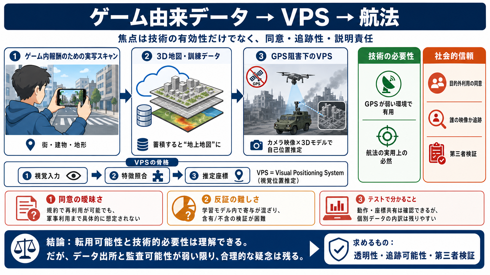

Pokémon Go Scans Quietly Trained The Navigation Tech Now Headed Into Military Drones
Master Part 107: Essential Tips for Success as a Commercial Drone Pilot with help from the Pilot Institute.DroneXL Logo.…

Master Part 107: Essential Tips for Success as a Commercial Drone Pilot with help from the Pilot Institute.DroneXL Logo.…
Billions of images collected by Pokemon Go mobile game players around the world could have been used to create a navigat…
# Niantic Spatial and Vantor Partner to Deliver Unified Air-to-Ground Positioning in GPS-Denied Areas. Niantic Spatial, …
### Niantic Spatial and Vantor Partner to Deliver Unified Air-to-Ground Positioning in GPS-Denied Areas. *Partnership wi…
# Vantor partners with Niantic Spatial on GPS-free navigation for defense market. The companies said the collaboration w…